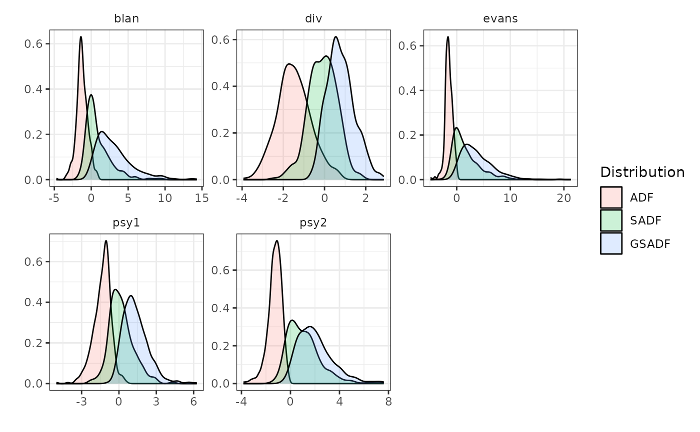

radf_wb_cv performs the Phillips & Shi (2020) wild bootstrap re-sampling
scheme, which is asymptotically robust to non-stationary volatility, to
generate critical values for the recursive unit root tests. radf_wb_distr2
computes the distribution.
Arguments
- data
A univariate or multivariate numeric time series object, a numeric vector or matrix, or a data.frame. A column may have leading and/or trailing
NAvalues (an uneven/unbalanced panel where series enter or exit the sample at different times) – those periods are filled withNAinbadf/bsadfand excluded from that series'adf/sadf/gsadf. InteriorNAvalues (a gap in the middle of a series) are not supported. When any series is padded this way, the panel statistic (bsadf_panel/gsadf_panel) is not available and is returned asNA, with a warning.- minw
A positive integer. The minimum window size (default = \((0.01 + 1.8/\sqrt(T))T\), where T denotes the sample size).
- nboot
A positive integer. Number of bootstraps (default = 500L).
- adflag
A positive integer. Number of lags when type is "fixed" or number of max lags when type is either "aic" or "bic".
- type
Character. "fixed" for fixed lag, "aic" or "bic" for automatic lag selection according to the criterion.
- tb
A positive integer. The simulated sample size.
- seed
An object specifying if and how the random number generator (rng) should be initialized. Either NULL or an integer will be used in a call to
set.seedbefore simulation. If set, the value is saved as "seed" attribute of the returned value. The default, NULL, will not change rng state, and return .Random.seed as the "seed" attribute. Results are reproducible across the parallel and non-parallel option when the same seed is used.
Value
For radf_wb_cv2 a list that contains the critical values for the ADF,
BADF, BSADF and GSADF tests. For radf_wb_distr a list that
contains the ADF, SADF and GSADF distributions.
References
Phillips, P. C., & Shi, S. (2020). Real time monitoring of asset markets: Bubbles and crises. In Handbook of Statistics (Vol. 42, pp. 61-80). Elsevier.
Phillips, P. C. B., Shi, S., & Yu, J. (2015). Testing for Multiple Bubbles: Historical Episodes of Exuberance and Collapse in the S&P 500. International Economic Review, 56(4), 1043-1078.
See also
radf_mc_cv for Monte Carlo critical values and
radf_sb_cv for sieve bootstrap critical values.
Examples
# \donttest{
# Default minimum window
wb <- radf_wb_cv2(sim_data)
tidy(wb)
#> # A tibble: 15 × 5
#> id sig adf sadf gsadf
#> <fct> <fct> <dbl> <dbl> <dbl>
#> 1 psy1 90 -0.355 1.24 2.15
#> 2 psy2 90 -0.379 1.35 2.59
#> 3 evans 90 -0.306 1.55 2.74
#> 4 div 90 -0.430 1.13 2.09
#> 5 blan 90 -0.330 1.24 2.51
#> 6 psy1 95 0.0816 1.85 2.49
#> 7 psy2 95 -0.0328 1.74 3.07
#> 8 evans 95 0.159 2.03 3.37
#> 9 div 95 -0.0658 1.52 2.67
#> 10 blan 95 -0.104 1.89 3.12
#> 11 psy1 99 0.798 2.91 3.33
#> 12 psy2 99 0.686 2.85 4.29
#> 13 evans 99 0.791 3.58 5.25
#> 14 div 99 0.820 2.11 3.61
#> 15 blan 99 0.578 2.73 4.29
# Change the minimum window and the number of bootstraps
wb2 <- radf_wb_cv2(sim_data, nboot = 600, minw = 20)
tidy(wb2)
#> # A tibble: 15 × 5
#> id sig adf sadf gsadf
#> <fct> <fct> <dbl> <dbl> <dbl>
#> 1 psy1 90 -0.362 1.07 2.10
#> 2 psy2 90 -0.427 1.44 2.32
#> 3 evans 90 -0.334 1.46 2.71
#> 4 div 90 -0.486 1.01 1.97
#> 5 blan 90 -0.395 1.37 2.24
#> 6 psy1 95 -0.0890 1.50 2.50
#> 7 psy2 95 -0.0790 2.07 2.64
#> 8 evans 95 -0.0218 2.12 3.16
#> 9 div 95 -0.142 1.37 2.45
#> 10 blan 95 -0.0634 1.73 2.69
#> 11 psy1 99 0.456 2.48 3.76
#> 12 psy2 99 0.452 2.59 3.71
#> 13 evans 99 1.08 3.23 4.22
#> 14 div 99 0.735 2.25 3.20
#> 15 blan 99 0.686 2.58 4.35
# Simulate distribution
wdist <- radf_wb_distr(sim_data)
autoplot(wdist)

# }